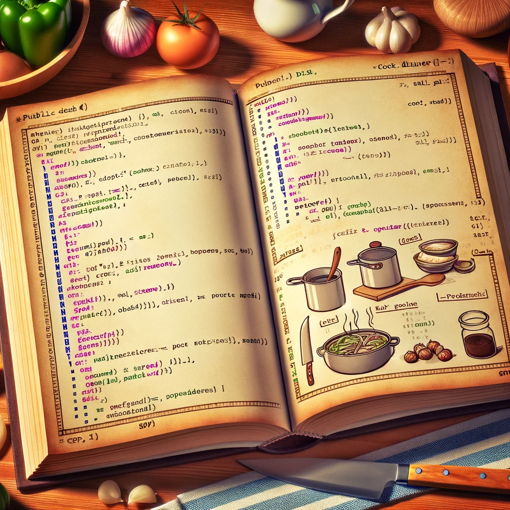

Programming vs cooking

Programming can be compared to a cooking recipe. Let's start with a simple recipe for a classic dish: Spaghetti Aglio e Olio for 2 people.
### Ingredients:
- Spaghetti: 200g
- Olive oil: 4 tablespoons
- Garlic (finely sliced): 2 cloves
- Red pepper flakes: 1/2 teaspoon
- Parsley (chopped): 2 tablespoons
- Salt: to taste
- Freshly ground black pepper: to taste
### Cooking Process:
1. Bring a large pot of salted water to a boil. Add spaghetti and cook until al dente, about 8-10 minutes. Drain, reserving 1 cup of pasta water.
2. While the pasta cooks, heat olive oil in a large pan over medium heat. Add the garlic and red pepper flakes, sautéing until the garlic is golden brown, about 2 minutes.
3. Add the drained spaghetti to the pan. Toss well to coat the spaghetti in the olive oil. If the pasta seems dry, add a little of the reserved pasta water until it reaches your desired consistency.
4. Remove from heat. Add the parsley, salt, and black pepper. Toss everything together until the spaghetti is evenly coated.
5. Serve immediately.
Programming is similar in that it needs: data and Instructions on how to prepare data in to actual result.
// our instructions
void Start()
{
// Example: Adjust recipe for 4 people
SpaghettiAglioEOlio(4);
}
static void SpaghettiAglioEOlio(int people = 2)
{
// Ingredients for 2 people
int spaghettiGrams = 200 * people;
int oliveOilTbsp = 4 * people;
int garlicCloves = 2 * people;
double redPepperFlakesTsp = 0.5 * people;
int parsleyTbsp = 2 * people;
string salt = "to taste";
string blackPepper = "to taste";
// print out recipe adjusted to number of people
Debug.Log($"Spaghetti Aglio e Olio Recipe for {people} people:");
Debug.Log($"- Spaghetti: {spaghettiGrams}g");
Debug.Log($"- Olive oil: {oliveOilTbsp} tablespoons");
Debug.Log($"- Garlic (finely sliced): {garlicCloves} cloves");
Debug.Log($"- Red pepper flakes: {redPepperFlakesTsp} teaspoon(s)");
Debug.Log($"- Parsley (chopped): {parsleyTbsp} tablespoons");
Debug.Log($"- Salt: {salt}");
Debug.Log($"- Freshly ground black pepper: {blackPepper}");
Debug.Log("Cooking Process:");
Debug.Log("1. Bring a large pot of salted water to a boil.");
Debug.Log("Add spaghetti and cook until al dente.");
Debug.Log("Drain, reserving 1 cup of pasta water.");
Debug.Log("2. Heat olive oil in a pan over medium heat.");
Debug.Log("Add garlic and red pepper, sauté until garlic is golden brown.");
Debug.Log("3. Add drained spaghetti to the pan. Toss to coat.");
Debug.Log("Add reserved pasta water as needed.");
Debug.Log("4. Remove from heat. Add parsley, salt, and black pepper.");
Debug.Log("Toss well.");
Debug.Log("5. Serve immediately.");
}
The primary distinction between programming and cooking lies in their respective approaches to precision and variability. Cooking, by its nature, embraces a certain level of vagueness. This inherent ambiguity often leads to varied outcomes, even when individuals follow the same recipe closely. The variability in results is part of the culinary experience, reflecting the artistry and personal touch in cooking.
Conversely, the essence of programming and computer science is the creation of a set of instructions designed to consistently produce identical results. This predictability is crucial, serving as a cornerstone for scientific research. However, one need not engage in scientific endeavors to appreciate the reliability that comes with executing a given set of instructions in programming.
Programming languages and computers have been meticulously developed to operate with exactitude and determinism, eschewing the subjective measurements (like "a pinch" or "a handful") commonly found in cooking. This precision ensures that every execution of a program under the same conditions yields the same outcome, unlike the subjective descriptors ("brownish," "creamy," etc.) used in cooking, which often fall short of conveying precise properties.
The variability in cooking results from the need to understand and manage numerous factors, such as ingredient behavior under different conditions, moisture content, and cooking times and temperatures. Mastery in cooking parallels the knowledge and expertise of a chemist, as it requires a deep understanding of how elements interact in various scenarios.
In programming, clarity and precision are paramount. Programming languages introduce data types to explicitly define the nature and size of data. Functions specify the operations applied to data, outlining clear transformations and expected outcomes. This focus on well-defined data and specific functions highlights programming's emphasis on control and predictability, contrasting with the fluid and often experiential nature of cooking.